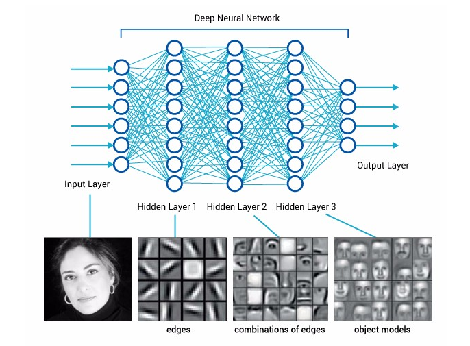
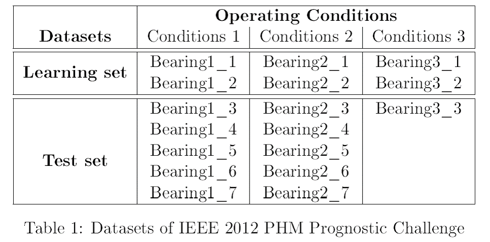
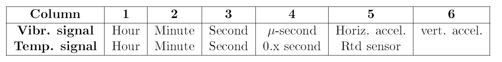
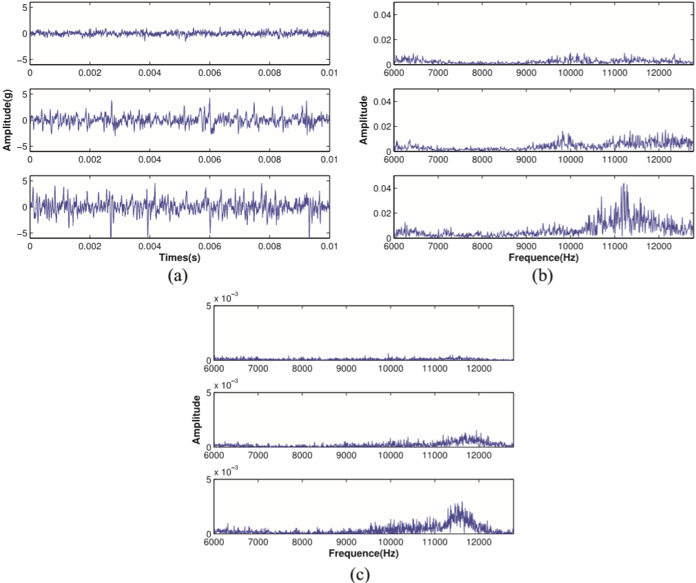
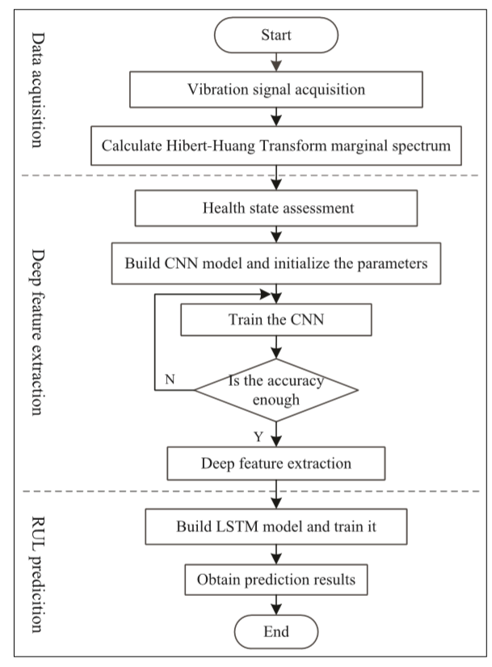

논문요약, Predicting remaining useful life of rolling bearings based on deep feature representation and long short-term memory neural network
Predicting remaining useful life of rolling bearings based on deep feature representation and long short-term memory neural network
Paper URL: https://journals.sagepub.com/doi/full/10.1177/1687814018817184
논문 이름이 엄청 길지만 사실 그렇게 심오하지 않는 논문에 대해 요약 리뷰를 해보겠습니다. 이 논문은deep feature extraction에 관련된 논문입니다. 신경망쪽으로 조금 알고 계신분이라면 아마 deep feature extraction이 무엇인지는 알고 계실테지만 밑에서 한번 짚고 넘어가겠습니다. 또한 이번 논문은 RUL과 관련이 있기 때문에 RUL이 무엇인지도 알아보겠습니다.
RUL(remaining useful life)
사실 RUL이라는 단어가 사실 정식 단어인지 아닌지는 잘 모르겠습니다. RUL은 어떠한 시스템이나 구성 요소가 교체하기 전에 의도한 목적에 따라 작동 할 수 있을 것으로 추정되는 잔여 수명을 이야기합니다. 즉, 어떠한 부품이 있을때, 이 부품의 남은 수명 같은 개념입니다.
이 논문은 이러한 RUL, 즉 잔존 수명이 얼마나 남았는지를 예측하기 위한 신경망 모델에 대한 논문이며 CNN과 LSTM을 사용하여 모델을 만들었습니다.
Deep feature
deep feature 간단하게 말하면 신경망에서 나오는 feature를 이야기 합니다. 아래의 이미지에서 사람의 사진이 신경망을 거치면서 나오는 저 feature들을 이야기 합니다. (이미지 출처는 여기를 클릭해주세요.)

신경망이 학습을 하면서 이미지에서 feature가 추출 되는데 우리는 이것을 deep feature이라고 이야기 합니다. 이러한 deep feature extraction(추출)은 신경망이 학습하면서 좋은 feature를 추출하면 할수록 더 좋은 성능을 뽑게 됩니다. 좋은 feature가 있다는 것은 그 많큼 좋은 성능의 Model이라고도 볼 수 있기 때문입니다.
예를 들어 사과와 바나나를 구별할 때, 사과는 동그랗다 라는 것을 알수 있는 feature와 바나나는 길다 라는 것을 알수 있는 feature를 위주로 뽑아가며 학습을 한다고 가정을 해봅시다. 이 feature들이 뚜렷하고 정확하면 할수록 분류를 잘하기 때문에 좋은 모델이라고도 애기할 수 있습니다.
반대로 이야기 하자면, 좋은 feature를 데이터 Input 값으로 넣는다면 좋은 모델을 뽑을수도 있다는 말로도 바꿀 수 있습니다.
이 점들을 이용해서 요즘은 여러 모델을 섞어서 쓰기도 합니다. 이 논문에서는 CNN과 LSTM을 가지고 모델을 만들었으며 이 논문의 모델의 핵심이 deep feature extraction이기 때문에 deep feature을 짚고 넘어가보았습니다.
DataSet
논문에서 사용된 데이터는 PHM IEEE 2012 Challenge에서 사용된 데이터입니다. PHM 데이터는 진동 데이터입니다. 진동 데이터를 사용한 이유는 수명이 점점 다해가면서 사용 중인 기계의 진동이 점점 강해진다는 점을 파악하여 만들어진 데이터 입니다. 공장에서는 큰 기계를 주로 사용하는데, 고장이나, 수명을 쉽게 파악하기 위해 진동 센서를 붙여 진동의 세기 등을 보고 파악한다고 합니다.

데이터는 위와 같습니다. 베어링 부품의 진동을 수집하였고 수집 상태는 총 3가지로 나눌 수 있으며, 아래와 같습니다.
- First operating conditions: 1800 rpm and 4000 N
- Second operating conditions: 1650 rpm and 4200 N
- Third operating conditions: 1500 rpm and 5000 N
데이터 상세 컬럼은 아래와 같습니다.

시간, 분, 초 등으로 이루어진 데이터라는 것을 알 수 있으며, 데이터 다운로드는 여기에서 보실 수 있고 데이터 상세 설명은 PDF로 같이 있으니 참고 하시길 바랍니다.
Data processing
첫 번째 데이터 전처리 단계에서 원본 데이터를 Hilbert Huang transform(HHT)로 변환합니다. 데이터 변환 후 SVD라고 하여 상관 계수를 구하는 단계를 거치고 데이터를 Input으로 CNN모델에 넣어줍니다.

HHT는 FFT와는 조금 다르니, 위 이미지(흐릿하지만)를 보고 참고 하세요. (a)가 원본 데이터, (b)가 FFT, (c)가 HHT한 데이터 입니다. 더 선명한 이미지는 논문에 있으니 참고하면 될 것 같습니다. 두 번째 전처리 단계는 CNN에서 학습이 끝나면 바로 전 레이어인, full-connected layer 에서 feature를 PCA로 돌려서 4까지 뽑고 LSTM의 Input으로 넣었습니다. 데이터 전처리는 HHT와 SVD와 PCA 이 세가지를 했고 실제로 만들어서 돌려본 결과 HHT하는데 데이터 양이 많아서 그런지는 모르겠지만 시간이 무척이나 걸렸어요.. 시간을 조금 줄이고 싶으신 분은 사실 FFT만 하셔도 무난한 성능을 얻으실 수 있을 것 같습니다.
CNN_LSTM
이 논문에서 만든 모델 Flowchart는 아래와 같습니다.

데이터 전처리 후 CNN Model을 돌리는데, 정확도가 99%가 될때까지 학습을 돌리고, 99%가 되는 순간 마지막 레이어 full-connected layer에서 deep feature extraction을 하게 됩니다. 아마 이 논문에서 가장 중요한 부분이 이 부분 같습니다. 정확도가 높을 때, feature를 뽑는 이유는 제일 좋은 feature를 LSTM Input값으로 넣기 위함이겠죠.
그런데 여기서 바로 feature를 뽑고 LSTM으로 넘기는게 아니라 PCA를 하게 됩니다. 주성분 분석으로 4까지 뽑은 후 LSTM의 Input으로 넣었습니다. CNN은 2layer, Kernel size는 2*2, feature maps 64, 128 입니다. 마지막으로 fun-connected는 25 neuron 입니다. 논문에서는 CNN Train acc 는 100%, Test acc 는 99.53%라고 합니다. LSTM의 파라미터는 자세히는 적혀 있지는 않지만 epoch 40이라고 하네요. 논문의 데이터는 시계열 데이터 이면서 RUL 예측 하기 위한 모델이기 때문에 평가방법은 RMSE를 사용했다고 합니다.
사실 중간에 25개의 통계식과 함께 통계적으로 feature를 나타내어 비교하는 부분이 있으나, 신경망 구현에 있어서 건너뛰어도 무방하여 건너 뛰었습니다.
요약 및 핵심
이 논문에서는 CNN을 좋은 feature를 추출하기 위함으로 사용하였고 LSTM을 이용하여 시계열 데이터를 예측하였습니다. 이렇게 어떠한 모델에서 feature를 추출하는 것을 Deep feature extraction 이라고 부르며, RUL 평가방법으로 RMSE를 사용합니다.
어렵게 볼 논문은 아닌지라, 간단하게 읽고 모델에 대한 영감 받기 좋은 논문인 것 같습니다. 논문보고 구현한 코드는 나중에 올리게 된다면 다시 업데이트 하겠습니다.